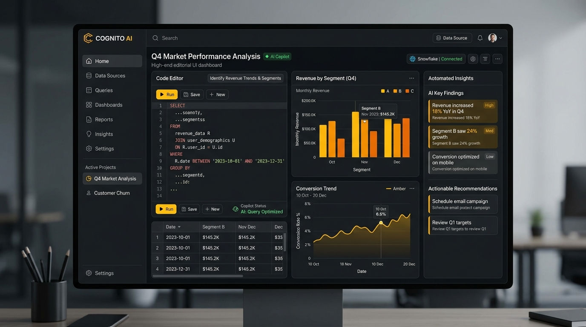

V
E
D
A
N
T
ACTIVE RESEARCH & LIVE DEVELOPMENT
TELEMETRY // ONLINE
Multi-Agent Stateful Graph Execution
Architecting fault-tolerant cyclic DAGs with state persistence, checkpointing, and human-in-the-loop tool approval gates.
QLoRA & PEFT Domain Adaptation
Fine-tuning Llama-3 8B & Mistral models on specialized dataset pairs for deterministic SQL construction and structured JSON response schemas.
Sub-50ms Hybrid Vector Search
Deploying hybrid sparse BM25 + dense vector indexing pipelines with Cohere re-ranking on async FastAPI microservice nodes.
INTELLIGENT SYSTEMS ARCHITECT •
MACHINE LEARNING •
DEEP LEARNING •
LARGE LANGUAGE MODELS •
AGENTIC AI •
LANGCHAIN & LANGGRAPH •
PRODUCTION RAG •
FASTAPI & MLOPS •
CLOUD AI SYSTEMS •
K
A
P
I
L
AI ENGINEER
Building deterministic reliability into non-deterministic AI intelligence.